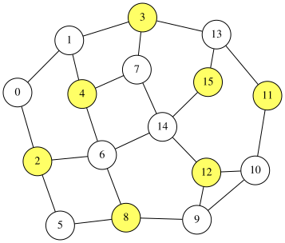

QUBO++ Simple Graph Drawing Library and Solving the Maximum Independent Set (MIS) Problem
QUBO++ Simple Graph Drawing Library
QUBO++ bundles a simple graph drawing library to visualize results obtained from graph-theoretic problems. It is a wrapper around Graphviz, which you can install on Ubuntu as follows:
$ sudo apt install graphviz
To use this library, include qbpp/graph.hpp:
#include <qbpp/graph.hpp>
The library generates DOT input and invokes neato to render graphs.
WARNING: This header-only library is intended for visualizing results produced by QUBO++ sample programs. Its API and behavior may change without notice, and it should not be used in mission-critical applications.
Maximum Independent Set (MIS) Problem
An independent set of an undirected graph $G=(V,E)$ is a subset of vertices $S\subseteq V$ such that no two vertices in $S$ are connected by an edge in $E$. The Maximum Independent Set (MIS) problem asks for an independent set with maximum cardinality.
The MIS problem can be formulated as a QUBO as follows. Assume that $G$ has $n$ vertices indexed from $0$ to $n-1$. We introduce $n$ binary variables $x_i$ $(0\le i\le n-1)$, where $x_i=1$ if and only if vertex $i$ is included in $S$. Since we want to maximize $|S|=\sum_{i=0}^{n-1}x_i$, we minimize the following objective:
\[\begin{aligned} \text{objective} = -\sum_{i=0}^{n-1} x_i . \end{aligned}\]To enforce independence, for every edge $(i,j)\in E$ we must not select both endpoints simultaneously. This can be penalized by
\[\begin{aligned} \text{constraint} = \sum_{(i,j)\in E} x_i x_j . \end{aligned}\]Combining the objective and the penalty yields the QUBO function
\[\begin{aligned} f = \text{objective} + 2\times\text{constraint}. \end{aligned}\]The penalty coefficient $2$ is sufficient to prioritize feasibility over increasing the set size.
QUBO++ Program for the MIS Problem
Based on the QUBO formulation of the MIS problem described above, the following QUBO++ program solves an instance with 16 nodes. The edges are stored in edges, and the obtained solution is visualized using the QUBO++ graph drawing library:
#define MAXDEG 2
#include <qbpp/qbpp.hpp>
#include <qbpp/exhaustive_solver.hpp>
#include <qbpp/graph.hpp>
int main() {
const size_t N = 16;
std::vector<std::pair<size_t, size_t>> edges = {
{0, 1}, {0, 2}, {1, 3}, {1, 4}, {2, 5}, {2, 6},
{3, 7}, {3, 13}, {4, 6}, {4, 7}, {5, 8}, {6, 8},
{6, 14}, {7, 14}, {8, 9}, {9, 10}, {9, 12}, {10, 11},
{10, 12}, {11, 13}, {12, 14}, {13, 15}, {14, 15}};
auto x = qbpp::var("x", N);
auto objective = -qbpp::sum(x);
auto constraint = qbpp::toExpr(0);
for (const auto& e : edges) {
constraint += x[e.first] * x[e.second];
}
auto f = objective + constraint * 2;
f.simplify_as_binary();
auto solver = qbpp::exhaustive_solver::ExhaustiveSolver(f);
auto sol = solver.search();
std::cout << "objective = " << objective(sol) << std::endl;
std::cout << "constraint = " << constraint(sol) << std::endl;
qbpp::graph::GraphDrawer graph;
for (size_t i = 0; i < N; ++i) {
graph.add_node(qbpp::graph::Node(i).color(sol(x[i])));
}
for (const auto& e : edges) {
graph.add_edge(qbpp::graph::Edge(e.first, e.second));
}
graph.write("mis.svg");
}
For a vector x of N = 16 binary variables, the expressions objective, constraint, and f are constructed according to the above QUBO formulation.
The Exhaustive Solver is then used to find an optimal solution for f, which is stored in sol. The values of objective and constraint evaluated at sol are printed.
A qbpp::graph::GraphDrawer object, graph, is created next. In the loop over i, a qbpp::graph::Node object is created with label i, and its color is set to 0 or 1 depending on the value of x[i] in sol via the color() member function. Each node is added to graph using add_node().
Similarly, in the loop over edges, an qbpp::graph::Edge(e.first, e.second) object is created for each edge and added to graph using add_edge(). Finally, graph.write("mis.svg") renders the graph and writes the resulting image to mis.svg.
This program produces the following output:
objective = -7
constraint = 0
This implies that the obtained solution selects 7 nodes and satisfies all constraints. The rendered image is saved as mis.svg:

API of the QUBO++ Simple Graph Drawing Library
The QUBO++ Simple Graph Drawing Library provides the following classes:
qbpp::graph::Node: Stores node information such as the label, color, pen width, and position.qbpp::graph::Edge: Stores edge information such as the two endpoint nodes, whether the edge is directed or undirected, its color, and pen width.qbpp::graph::GraphDrawing: Stores vectors ofqbpp::graph::Nodeandqbpp::graph::Edgethat together constitute a graph.
qbpp::graph::Node
Node(std::string s): Constructs a node whose label is s.Node(size_t i)Constructs a node whose label isstd::to_string(i).color(std::string s)Sets the node color to s, which must be in the form#RRGGBB.color(int i): Sets the node color to thei-th entry in the color palette. The default color 0 is white.penwidth(float f): Sets the pen width toffor drawing the node outline.position(float x, float y): Sets the node position to(x, y).
qbpp::graph::Edge
The following constructors and member functions are supported:
Edge(std::string from, std::string to): Constructs an edge connecting the nodes labeled from and to.Edge(size_t from, size_t to); Constructs an edge connecting the node labeledstd::to_string(from)to the node labeledstd::to_string(to).directed(): Configures the edge as directed.color(std::string s): Sets the edge color tos, which must be in the form#RRGGBB.color(int i): Sets the edge color to the i-th entry in the color palette. The default color 0 is black.penwidth(float f): Sets the pen width toffor drawing the edge.
qbpp::graph::GraphDrawing
The following member functions are supported:
add_node(const Node& node): Appends node to the graph.add_edge(const Edge& edge): Appends edge to the graph.write(std::string file_name): Renders the graph and writes it tofile_name. Supported formats includesvg,png,jpg, andpdf(via Graphviz). The output format is determined by the file extension.